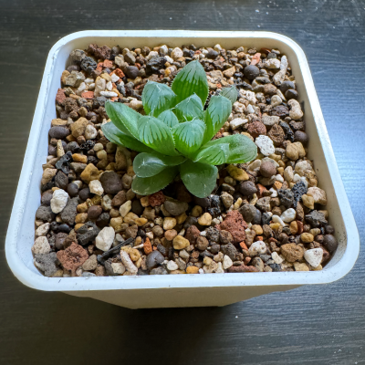
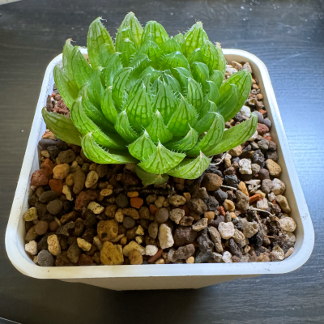
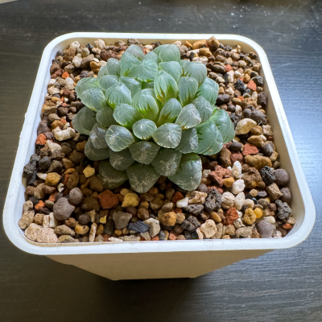
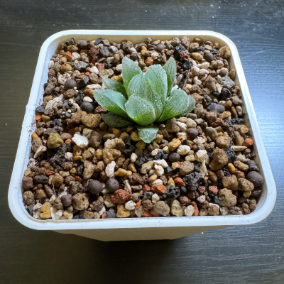

Haworthia (十二卷屬)
Haworthia cooperi (玉露)
Distribution
- the Eastern Cape Province, South Africa
Varieties
-
Haworthia cooperi var. dielsiana (帝玉露)
- 
-
Haworthia cooperi var. picturata (纓水晶)
- 
- Haworthia cooperi var. truncata (姬玉露)
- 
- Haworthia cooperi var. venusta (毛玉露)
- 
- ... total 13 varieties
Environment (Taiwan)
- temperature: ❄️ 15°C < 🌡️ < 🔥 25°C (耐旱, 不耐寒)
- light output: 8000 lm
- watering: once a week
- soil:
- light period: 3 ~ 4 hr (半日照)
- growth season: 春、秋